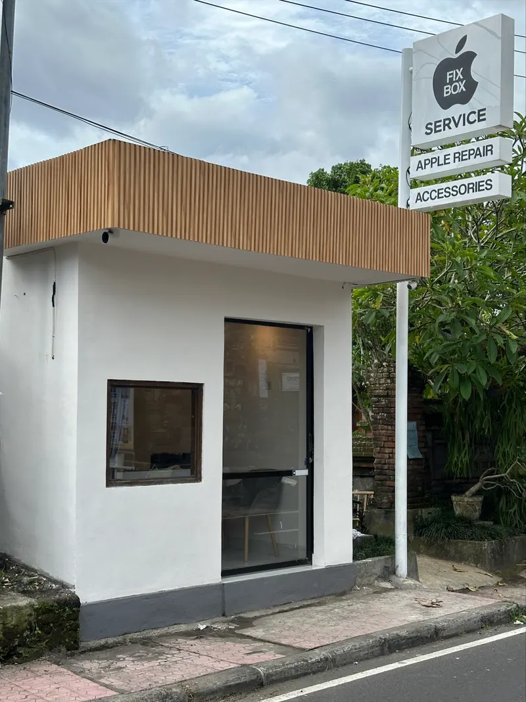

iPhone screen replacement
Ubud roads and scooter pockets are hard on phones. We keep displays for current iPhone models in stock and replace a cracked screen while you have lunch nearby.
About 1 hour
Broken iPhone screen, a battery that no longer lasts the day, or a MacBook that met a cup of coffee? You do not need to ride to Denpasar — we fix all of it here in Ubud.

Most people come to us with a cracked iPhone screen, a worn-out battery or a liquid-damaged MacBook. Whatever the fault, diagnostics are free and the price is agreed before we start.
Ubud roads and scooter pockets are hard on phones. We keep displays for current iPhone models in stock and replace a cracked screen while you have lunch nearby.
About 1 hour
A phone that dies halfway through the day is the number one complaint we hear from people working remotely from Ubud. A new battery fixes it in under an hour.
About 45 minutes
Rice terraces, waterfalls and rainy season downpours claim plenty of phones. Switch the device off, do not charge it, and bring it to us as quickly as you can.
Same-day diagnosis
Coffee in a café, beer at dinner, or rain through a bag. We disassemble the machine, clean the logic board properly and replace the components the liquid destroyed.
Diagnosis within a day
Cracked panel, dark patches, dead backlight or lines across the display. We fit a new panel or complete lid assembly depending on what the damage requires.
1–2 days
If the trackpad has started to lift or the case no longer closes flat, the battery is swelling and needs replacing before it damages anything else.
Same day
Devices declared dead by other shops are often one failed component away from working. We diagnose and repair at chip level under a microscope.
Quoted after diagnosis
Bring the device in and we will tell you what is wrong and what it costs to fix. No charge, and no obligation to go ahead with the repair.
Free of charge
The usual alternative in Ubud is leaving your device somewhere that forwards it to Denpasar and waiting several days. We do the work ourselves, in our own workshop, with microscope and rework equipment on the bench.

A quick WhatsApp message before you ride over makes all the difference: we check the part for your model, and the repair starts the moment you arrive.

Tell us the device model and what went wrong. We reply with an estimate and confirm whether the part is in stock.
We are at No.39 in Sambahan, north of Ubud centre. We inspect the device with you and confirm the final price.

We test everything together before you leave — screen, cameras, Face ID, charging and battery health.
From 30 reviews left by customers of our Ubud workshop.
“Hands down the best place in Ubud to replace your iPhone battery. As a digital nomad who depends on my phone 24/7, they had it working again in under an hour with a quality battery and a fair price.”
“Honestly, I was really stressed about my iPhone battery constantly dying, but the people at this little repair shop in Ubud completely saved me. Battery replaced in about 45 minutes at a very affordable price.”
“My MacBook is finally back to normal! Fast repair, transparent pricing and very friendly service. Definitely a 5-star experience!”
On Jl. Suweta in Sambahan — the white corner building with the tall sign.
Gg. Asri I, Tibubeneng — our second workshop, same team and same repairs.